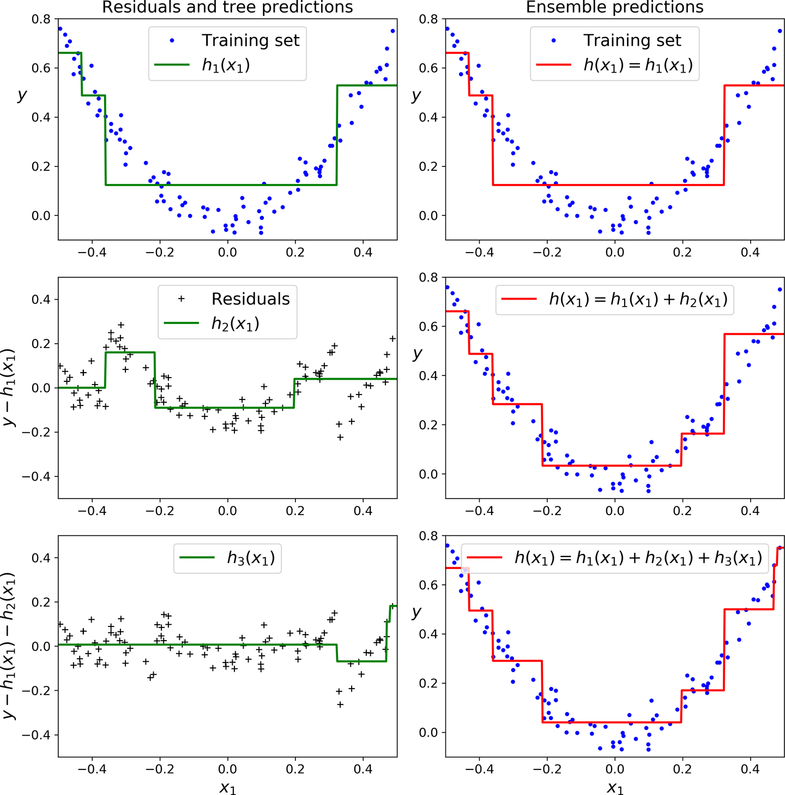
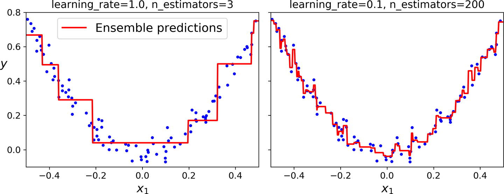

Boosting
Contents
Boosting¶
In this chapter we are treating adaptive boosting and gradient_boosting that use ensembles of many weak learner, to produce a stronger learner. In contrast to other ensemble methods though such as random forests, boosting methods, train predictors sequentially rather than parallel.
Adaptive Boosting (AdaBoost)¶
If we imagine a sequence of weak learners like in random forests, boosting starts with training the first learner and at each subsequent step, due to its sequential nature, it considers the mistakes of the preceding learning step as shown below.
 Boosting methods act sequentially considering the prediction results of the preceding learners.
Boosting methods act sequentially considering the prediction results of the preceding learners.
Lets see how AdaBoost functions using an example based on this article.
Lets assume that you are a data scientist working on a dating site and you are asked to develop an algorithm that classifies whether a profile is attractive or not. The dataset you are given is shown below. This is of course a fictitious dataset - there is no way that someone will put in their profile that they are not smart or polite.
Weight |
Smart |
Polite |
Fit |
Attractive |
|---|---|---|---|---|
180 |
no |
no |
no |
no |
150 |
yes |
yes |
no |
no |
175 |
no |
yes |
yes |
yes |
165 |
yes |
yes |
yes |
yes |
190 |
no |
yes |
no |
no |
201 |
yes |
yes |
yes |
yes |
185 |
yes |
yes |
no |
yes |
168 |
yes |
no |
yes |
yes |
We assume that the label \(y \in \{+1, -1}\) instead of 0 or 1 with loss of generality. This is a binary classification problem but the method is equally applicable to multi-class problems.
AdaBoost calls a given weak learner repeatedly in a series of rounds \(t=1, \dots, T\), each weak learner is denoted by \(h_t\) - the weak hypothesis that each learner evaluates. In this example case, we can elect a hypothesis set from the family of decision trees and the specific hypothesis we will use is a decision tree with single split (depth = 1) called decision stump.
One of the main ideas of the AdaBoost is to maintain a distribution of weights over the training set. In each round, the weights of incorrectly classified examples are increased so that the weak learner is forced to focus on the hard examples in the training set. The size of the weight vector equals \(m\), the number of examples we are given. The weight of training example \(i\) on round \(t\) is denoted \(w_t(i)\).
Initially, all weights are set equally,
At each round \(t\) we have \(n\) decision stumps each producing \(\hat{\mathbf y}_t\) decisions. We need to find which stump best fits the examples, we can try every feature of the input along with every possible threshold and see which one offers the lower error rate. We therefore compare the predictions made by each weak learner with the actual labels in the training set to produce the weighted error rate \(\epsilon_t\)
The decision stump that offers the lower error rate, has a much higher significance given via the formula
where \(\eta\) is a learning rate hyperparameter - if not optimized it defaults to 1.0.
Then AdaBoost updates the example weights via the equations below that boosts the weights of misclassified examples and normalizes them so that they can be interpreted as a probability distribution:
The process is repeated in the next round with each round determining a weak hypothesis. At the end we make the final hypothesis
which can be interpreted as the weighted majority vote of the T weak hypotheses. As shown in the figure below for various values of \(\eta\),
 The first classifier gets many instances wrong, so their weights get boosted. The second classifier therefore does a better job on these instances, and so on. The plot on the right represents the same sequence of predictors, except that the learning rate is halved (i.e., the misclassified instance weights are boosted half as much at every iteration). As you can see, this sequential learning technique has some similarities with Gradient Descent, except that instead of tweaking a single predictor’s parameters to minimize a cost function, AdaBoost adds predictors to the ensemble, gradually making it better.
The first classifier gets many instances wrong, so their weights get boosted. The second classifier therefore does a better job on these instances, and so on. The plot on the right represents the same sequence of predictors, except that the learning rate is halved (i.e., the misclassified instance weights are boosted half as much at every iteration). As you can see, this sequential learning technique has some similarities with Gradient Descent, except that instead of tweaking a single predictor’s parameters to minimize a cost function, AdaBoost adds predictors to the ensemble, gradually making it better.
A perhaps more illuminating example that shows the weight adjustments is shown below. You need to replace the \(m\) with \(t\) to match the notation of these notes.


Note that although decision stumps were used here, the method is generic to any weak learner.
Gradient Boosting¶
Like AdaBoost, Gradient Boosting works by sequentially adding predictors to an ensemble, each one correcting its predecessor. However, instead of tweaking the example weights at every iteration, this method tries to fit the new predictor to the residual errors made by the previous predictor.
The complete understanding of gradient boosting (and boosting in general) requires mathematical treatment around function-space optimization as in Friedma’s original paper. Here we look at the solution from a practical perspective and attempt to understand it (superficially) with the use of a regression example as shown below.
 In this depiction of Gradient Boosting, the first predictor (top left) is trained normally, then each consecutive predictor (middle left and lower left) is trained on the previous predictor’s residuals; the right column shows the resulting ensemble’s predictions which is equal to the sum of the predictions of the trees involved.
Predictions improve as the number of trees grows but we need to know when to stop.
 On the left we dont have enough trees to fit the training set, while the one on the right we have too many trees and overfit the training set.
In practice, do not use sklearn for gradient boosting. It is not an exaggeration to note that the optimized library for gradient boosting, XGBoost is a defacto tool for winning Kaggle competitions. Given that gradient boosting dominates performance wise many methods in classical machine learning with structured data (e.g. tabular data), XGBoost is also the standard library to try first in these type of problems. It offers also automatic ways of stopping at the right number of trees in the ensemble.